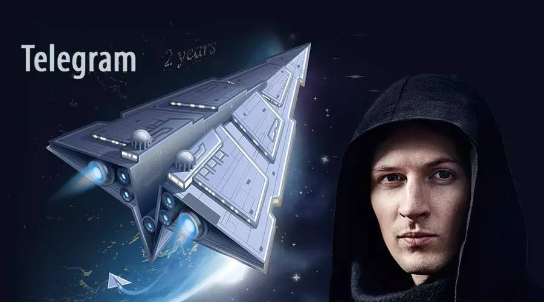

Telegram传奇：俄罗斯富豪、黑客高手、极权和阴谋

说了很久要写Telegram的故事，一直拖延没有写。在我拖延的这段时间里面，Telegarm继续快速增长，前几天，在旧金山的TechCrunch Disrupt活动上，创始人Durov说现在Telegram每天发送的消息数已经达到了120亿条，而今年2月的时候只有10亿条，是时候写完这个故事了。不过，随着它的出名，在中国也毫无悬念的变得难以访问，所以，如果你看完下载了它，又觉得不好连上，程序崩溃什么的，这并不是Telegram的错。
每天120亿条消息是什么概念呢？我能找到的Whatsapp最新一次公布这个数字是今年4月，每天640亿条，这可是Facebook以190亿美金代价重金收购的App，并且被当作Facebook在移动平台上最好的投资之一。出生在最大的互联网市场美国，并且有Facebook的全力支持，也只是几倍于Telegram的规模而已。如果不出意外，未来的某个时候，Telegram会超过Whatsapp。
消息数量和月活跃用户上，Telegram显然比Whatsapp和微信还有很大差距。但这是一个只有2年历史的新工具，并且他是一个完全私人拥有的公司，没有其他股东，没有投资人，号称永远不会出售，并且，它有着一支人数极少又战斗力极强的团队…这一切都让这个产品显得与众不同。如果要说这个时代的传奇，Telegram和它的创始人甚至团队，都完全可以入选。它和人们所知道的各种创业故事、商业传奇完全不一样，但又具有传奇故事的一切要素：黑客高手、政治、极权、阴谋…富豪，一应俱全。